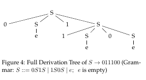
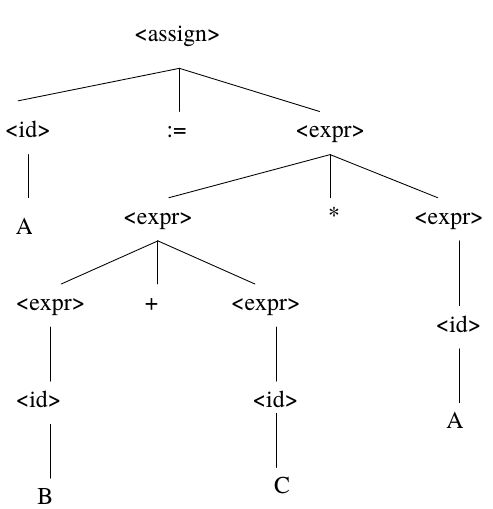
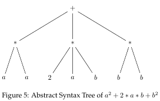
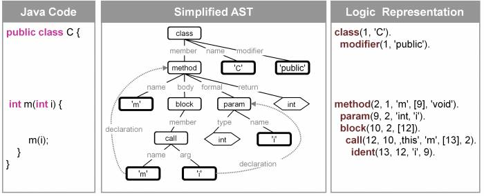

Abstract Syntax Trees
Abstract: A quick intro to ASTs.
1 Defs
- A language is a set of sentences. Syntax rules specify which sentences are in the language.
- Syntax: the form of expressions, statements, and program units.
- Syntax rules use terminals (aka tokens, lexemes) and non-terminals
- Lexemes: sequences of characters without "delimiters" and obeying certain rules; examples: operators (+, *, …), numbers, identifier, literals, , reserved words.
- Syntax analyzer component of a compiler determines whether the sequence of characters (in a file) is syntactically a sentence.
2 Grammars
2.1 Math of Formal Languages: Syntax
- Grammar: A collection of production rules that generate the sentences of a language.
- Levels of Languages
- Regex
- Context-Free
- Context-Sensitive
- …
- Syntax of most languages is "specified" (incompletely) using context-free grammars.
2.2 Math of Formal Languages: Semantics
- Semantics: the meaning of expressions, statements, and program units.
- Semantics requires context, and more.
- Denotational Semantics
- Axiomatic Semantics
- Semantics of most languages is "specified" (incompletely) using carefully worded English prose.
2.3 BNF Notation
- BNF (Backus-Naur Form) is a specific notation for writing down a context-free grammar
- Examples of BNF rules:
<ident_list> → identifier | identifier, <ident_list> <if_stmt> → if <logic_expr> then <stmt>
- LHS → RHS
- The LHS is a non-terminal
- The RHS consists of a seq of terminals and non-terminals
- BNF shows non-terminals within < >
- The lexemes are terminals.
- There are many BNF variations.
2.4 Modern Notations
- Simplify the BNF notation.
- Drop <> for non-terminals
- Show terminals in a different font, or quote them
- Use {} or * for repetitions
3 Java Grammar
- Chapter2. Grammars [from Oracle Java] This chapter describes the context-free grammars used in this specification to define the lexical and syntactic structure of a program.
- Chapter18. Java [from Oracle Java] This chapter presents a grammar for the Java programming language.
4 Derivation Tree Examples
- A parser generates a derivation tree.
- The nodes are terminals (leaves) and non-terminals.
- A Grammar and an Example Derivation Tree
 - Another Grammar and an Example Derivation Tree
<assign> -> <id> := <expr> <id> -> A | B | C <expr> -> <expr> + <expr> | <expr> * <expr> | ( <expr> ) | <id>

Figure 1: One Derivation Tree of A := B + C * A (Others are possible)
5 Abstract Syntax Tree (AST)
- A parser generates a derivation tree. An unnamed component of the compiler then generates ASTs. Semantic analyses, code generation, etc. traverse the ASTs.
- The nodes are only terminals (leaves, or not) and never non-terminals.
- Unfortunately, ASTs have not been "standardized".
- Eclipse Java development tools (JDT) Abstract Syntax Trees API. Popular.
5.1 Example ASTs
- AST of an arith exp

- From JTransformer

Figure 3: From JTransformer
- Euclid's Algorithm

Figure 4: Exercise: Deduce the source code from the above AST [Assume appropriate declarations.]
- Examples of AST drawings often do not show symbol-tables, but they are included.